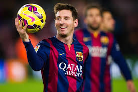
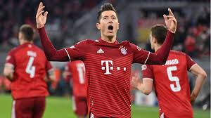
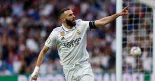
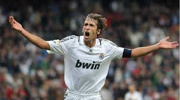
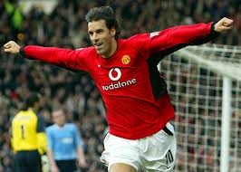
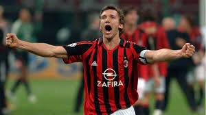
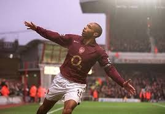
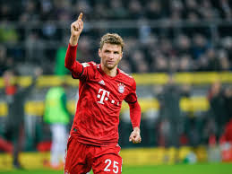
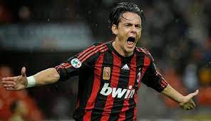

Quienes son los maximos goleadores de la championsleague?..
Cristiano Ronaldo - 141 goles
Menu

Entre Messi y Cristiano dominan todos los rubros y en este el portugués lleva la posta. Cristiano volvió a jugar en Champions con el Manchester United y también a marcar. Con la Juventus, convirtió 14 goles y 105 con el Madrid, el resto con los Diablos Rojos. El Bicho es el dueño absoluto de la competencia. Gana partidos y a su vez Orejonas.
Lionel Messi - 125 goles
Menu
Leo Messi anotó 120 con el Barcelonay ya empezó a sumar sus primeros tantos con el PSG. Así y todo, el argentino continúa lejos de Cristiano Ronaldo. ¿Volverá a liderar y alzar la Champions League junto a Ney?
Robert Lewandowski - 82 goles
Menu
El delantero del Bayern no paró de marcar goles y está en el podio de goleadores históricos. Lewandowski es el 2do máximo artillero de la actual edición de la Champions con 9 goles. Así, el polaco intenta acercarse a Messi en el segundo lugar de la lista. Tendrá la oportunidad para seguir sumando.
Karim Benzema - 76 goles
Menu
Con 76 goles está Karim Benzema en la cuarta plaza y ya dejó atrás al que fue su compañero en el Real Madrid. El francés volvió a ver puerta ante el Sheriff y ya lleva 5 esta temporada. Todavía le quedan como mínimo tres partidos más para ampliar su cuenta. 12/76 los anotó con el Lyon y el resto en La Casa Blanca. El capitán va por más.
Raúl González - 71 goles
Menu
Durante muchos años, Raúl fue el máximo anotador de la Champions hasta que llegaron Messi y Cristiano y le desbancaron de ese puesto de honor. El delantero anotó 71 goles 66 de ellos con el Real Madrid en 130 partidos y 5 en 12 partidos durante su etapa el Schalke 04.
Ruud van Nistelrooy - 60 goles
Menu
Ruud Van Nistelrooy, un punta clásico, de área y remate al primer toque. Atacante muy certero. Anotó tantos con el PSV Eindhoven, el Manchester United y el Real Madrid. De los mejores centrodelanteros que surgieron del suelo de Holanda. Desquiciado.
Andriy Shevchenko - 59 goles
Menu
Los Rossoneri tienen que volver a su mejor época. Shevchenko era una insignia de aquel AC Milán campeón de Europa. El ucraniano también marcó tantos para el Dinamo de Kiev y el Chelsea, y así se transformó en el orgullo de su país.
Thierry Henry - 51 goles
Menu
El francés dejó el fútbol con un número y aún se mantiene impoluto en el Top 10. 51 un goles en Champions League, así llevó al Arsenal a una final, donde cayó contra el Barcelona. Precisamente, fue con los culés con los que ganó el título.
Thomas Müller - 50 goles
Menu
Müller superó a Inzaghi e Ibrahimovic en el puesto número N°9, sin ser un tradicional delantero de área. Aspira seguir trepando en esta lista con el plus de ya tener una Orejona en su vitrina
Filippo Inzaghi - 50 goles
Menu
El recordado delantero del AC Milán convirtió 50 goles en la Champions League. Y sí, no se enojen los de la Juve, allí también sumo algunos porotos para ingresar en el podio de máximos artilleros.